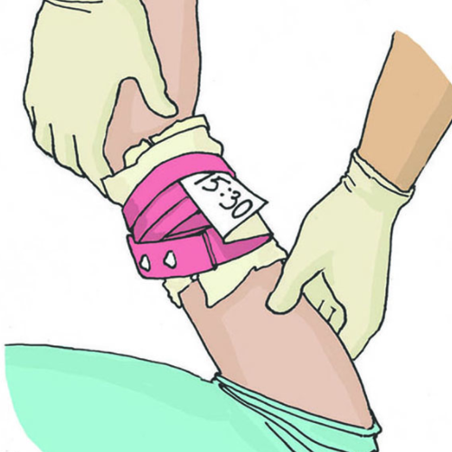

Прямое давление на рану
Это является наиболее простым способом остановки кровотечений. При его использовании рана
закрывается стерильными салфетками или стерильным бинтом, после чего на область раны
осуществляется давление рукой участника оказания первой помощи с силой, достаточной для
остановки кровотечения. При отсутствии бинта или салфеток для наложения на рану можно
использовать любую подручную ткань. При отсутствии табельных и подручных средств допустимо
осуществлять давление на рану рукой участника оказания первой помощи

Сгибание конечности
Максимальное сгибание конечности в суставе приводит к перегибу и сдавлению кровеносного
сосуда, что способствует прекращению кровотечения. Этот способ достаточно эффективно
останавливает кровотечение. Для повышения эффективности в область сустава необходимо
вложить 1-2 бинта или свернутую валиком одежду. После сгибания конечность фиксируют
руками, несколькими турами бинта или подручными средствами


Наложение шгута
Жгут накладывается лишь для остановки артериального кровотечения при ранении плеча и
бедра, а также если в результате травмы была ампутирована рука или нога. В остальных
случаях применение жгута нецелесообразно по причине высокой степени травмирования кожи и
мягких тканей.
Жгут – крайняя мера


Проверьте свои знания
Расставьте действия в правильном порядке (артериальное кровотечение из плеча)
1
2

3